The Architecture of Trust
Act 2: Architecture + Infrastructure · 81 illustrations
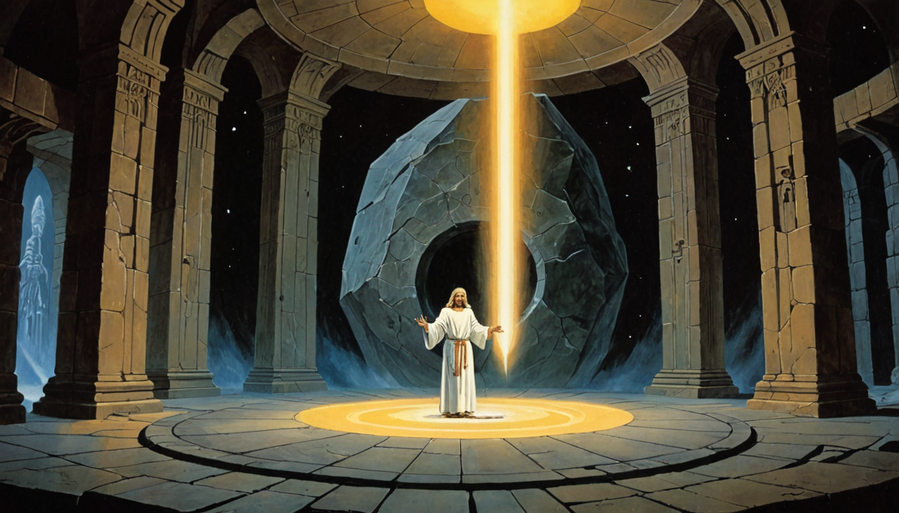
The original design pegged .kasset values to gold via an algorithmic oracle. This was abandoned because:
Gold is mutable. Central banks hold 35,000+ tonnes. Government gold sales/purchases move the price. A sovereign could manipulate .kasset values by manipulating gold markets.
Gold is geographically asymmetric. South Africa, China, Russia, and Australia dominate production. σ's energy base is universal.
Gold has no intrinsic utility in the digital context. Energy is the substrate of all computation. Pricing intelligence in energy units is philosophically coherent.
§ 1. Why Not Gold?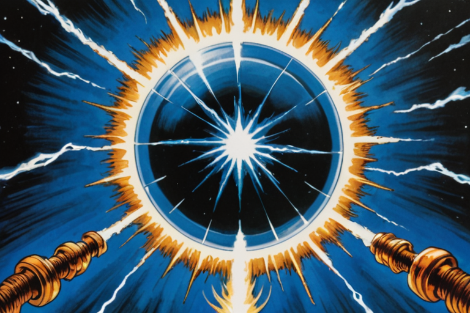
· Derived from: SI joule, defined by the Planck constant (exact since the 2019 BIPM redefinition of SI base units)
· Changes when: NIST redefines the joule (happens only when measurement precision improves — the unit itself is invariant)
· Cannot be: printed, inflated, sanctioned, debased
σ is a reference number — a unit-of-account label applied to the user's existing fiat balance. It is NOT:
· A token, coin, or cryptocurrency (no blockchain, no chain, no wallet)
· A stablecoin (no dollar peg)
§ 2. The σ Definition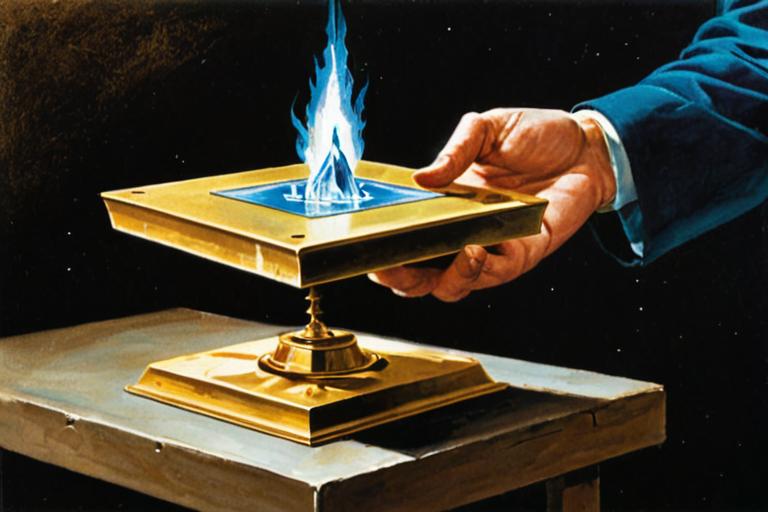
REC = Regional Energy Cost
SSK publishes and open-sources a deterministic conversion function that converts σ to local currency using publicly available total delivered energy cost data — the all-in price a consumer pays per kWh, including production, transmission, distribution, storage, and applicable taxes/fees. This is the retail electricity price, not the levelized cost of energy (LCOE) or production cost alone.
The company publishes the formula once. It does NOT operate a centralized oracle, set prices, or update rates on behalf of users.
Why Total Delivered Cost, Not Production Cost
The total delivered cost is the correct economic basis because it represents the actual price of energy as experienced by the user — the full cost of having 1 kWh available for computation at a specific place and time.
Data Sources (User-Configurable)
§ 3. σ Conversion Formula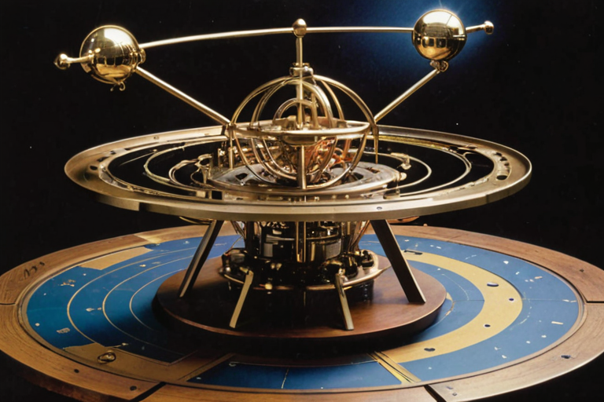
There is no blockchain, no sequencer, and no smart contract. Trades settle bilaterally. Both devices must have their vaults open (foreground exclusivity — Doc 28 §0.7) to sign:
Steps 7-12 are intentionally asynchronous. The trade itself (steps 1-6) completes without SSK involvement. Fiat settlement (step 7) occurs outside SSK using whatever payment method the counterparties choose — identical to how Craigslist, Facebook Marketplace, and OfferUp transactions settle. The seller's on-device payment confirmation (step 8) binds the fiat acknowledgment to the cryptographic provenance chain without SSK touching, holding, or transmitting money. Certification happens later — when network connectivity is available, or when the user is physically near a Vault mesh node.
SSK's certification service is a notary — it certifies trades in exchange for a fee. It does not set prices, order transactions, manage a ledger, or control the marketplace. The traded .kasset content is Edgcumbe-encoded (Doc 28 §0.5) — a standardized, lossy format that carries methodology without the seller's cognitive fingerprint. The certification service certifies the provenance chain, not the content. The Codex (Stiftung-operated, non-profit) provides permanent archival.
Certification constraints (from Layer 0/1):
· BIPA compliance gate. .kassets derived from biometric sensor data (face mesh, voice, gesture) must carry verified BIPA consent in the provenance chain. The certification service verifies the consent record before certifying biometric-derived trades. This is a legal compliance requirement, not a content evaluation.
· Orphan record handling. If a user exercises the burn credential (Doc 28 §0.10), certification records for that user's previously certified trades persist in the Codex. The Codex handles orphaned provenance records — the certification is permanent even if the minter's vault no longer exists.
§ 5. Bilateral Settlement Protocol· Primary display: Spark ⚡ (always)
· Secondary: Local currency as reference (toggle-able), calculated from user's selected data source
· Source line: Explicit data source + timestamp (not "↑ 0.3% today" — SSK does not track rate movements)
· Staleness warning: Soft warning if cached rate exceeds user's staleness preference (default: 7 days)
§ 6. User-Facing DisplayThe Trend
Global energy costs are shaped by two vectors moving in opposite directions:
Production cost (LCOE) is in secular decline:
Net-positive milestones:
· December 2022: National Ignition Facility (NIF) achieves fusion ignition — net energy gain for the first time in history
· 2024: Helion Energy targets 2028 for commercial fusion pilot (production LCOE projected: $0.01–$0.05/kWh)
§ 8. Energy Convergence Thesis — σ Stability Under Declining Production CostsThesis summary: σ is a metrological reference number defined by physics (1 kWh ≡ 3.6 MJ), not by policy. Its fiat-equivalent value is determined by publicly observable delivered energy costs and fluctuates with those costs — it can decrease as energy infrastructure becomes more efficient. Each device computes the conversion locally using a published, deterministic, open-source formula on user-selected data sources. No central oracle exists. Unlike a production-cost peg, the total-delivered-cost basis retains a durable non-zero fiat anchor through infrastructure costs, making σ a practical unit of account today. σ is not designed or marketed as an investment, a store of value, or an appreciating asset. Users are responsible for their own assessment of σ's utility and any applicable tax obligations.
§ 8. σ Conversion Formula Resilience Under Energy Convergence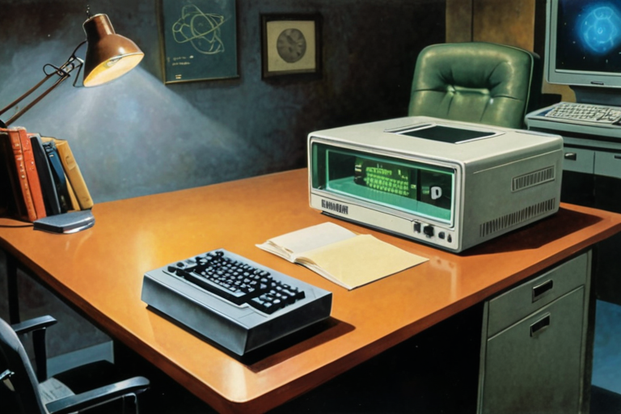
Edge-Native — All processing happens on-device. Sensors connect via BLE to the user's Sovereign Survival Kit instance, not to a cloud.
Open Protocol — Sovereign Survival Kit defines a SovSensor protocol (JSON over BLE GATT) that any manufacturer can implement. The products below are reference designs, not a walled garden.
Data as Input, Not Product — Sensor data is raw input for the twin's planning engines. These are NOT standalone health gadgets with their own apps. They are peripherals for the OS.
.kasset Eligible — Anonymized, aggregated biometric trends can become .kasset data (e.g., "12 months of metabolic optimization protocols") for A2A commerce.
Privacy by Architecture — Biometric data is the most sensitive personal data category. It stays in the PII vault with AES-256-GCM encryption. It is NEVER transmitted over a network.
§ 1. Design PrinciplesService UUID
Characteristic Format
Every sensor transmits a standardized JSON payload over BLE GATT notify:
Design Constraints
§ 3. SovSensor Protocol (JSON over BLE GATT)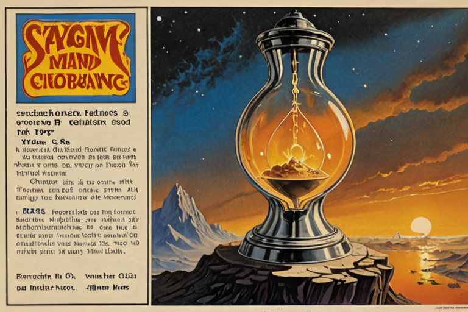
Note: This architecture represents the Version 2.0 design, intended for release concurrently with the Lifestyle Sensors line.
As the sensor line streams continuous biometric and environmental data, the Sovereign Digital Cocoon evolves into a Universal Fact Engine. Every breath, heartbeat, and movement becomes a high-signal fact captured locally.
4.1 The Merkle Epoch (Local Minting)
Minting every individual data point via AES-256-GCM and ML-DSA-65 would destroy battery and storage. Instead, Version 2.0 utilizes a Layer 3 State Channel (The Merkle Epoch):
The Accumulator: Every sensor reading and human-to-human message is hashed as a leaf in a local Merkle Tree.
Producer-Free Minting: This local hashing runs on the user's hardware and is inherently free (costing only local electricity σ).
§ 4. Version 2.0: The Sovereign Fact Engine (Ambient Knowledge Capitalization)The twin's Situational Retrieval module (documented in 03_Twin_Architecture.md, Section 2) uses sensor data as one of its context signals. For example:
· SovPulse reports HRV = 22ms → twin tags current state as "high stress"
· SovAir reports CO2 = 1200ppm → twin injects a ventilation nudge before the next response
· SovBreath reports acetone = 3.1ppm → twin notes ketosis and factors into Diet domain planning
§ 5. Data Flow: Sensor → twinHardware Revenue
Strategic Value (Not Revenue)
The primary value of the sensor line is NOT hardware margin. It is:
Engagement flywheel — As biometric history accumulates, the twin becomes irreplaceable. 6 months of continuous HRV, sleep, and metabolic data creates a personal health baseline no competitor can replicate.
Extreme switching cost — The biometric corpus is locked in the PII vault with the user's encryption key. Starting fresh with another platform means losing all historical context.
Data network effect — Anonymized .kasset health patterns (opt-in via CIP) improve the twin's planning algorithms across the entire network.
§ 5. Business ModelNote: Biometric sensor devices may trigger regulatory classification depending on jurisdiction. This section captures awareness; detailed analysis is deferred to Phase 2+.
§ 6. Regulatory ConsiderationsThe sensor product line complements, not replaces, the existing hardware roadmap:
§ 7. Relationship to Existing Hardware IPThe network begins with a dinner — and repeats no more than four times per year.
A small portion of the seed round funds an intimate, curated series of events in New York City — each seating 8 to 16 people drawn from local educational institutions, alumni networks, and creative communities. Each event targets a different community. The venue is site-specific (a private dining room, a gallery, a club library). The meal is catered. The invitation carries one instruction:
"Bring a piece of digital media you made. You will mint it and trade it with the others at the table."
The quarterly cadence is deliberate — scarcity creates gravity. These are not recurring meetups. Each Genesis dinner is a curated, invitation-only event that seeds a new community into the network. Four per year means four new communities, four new .kasset domains, four new local word-of-mouth waves.
Why 8–16 People
The Genesis Grant: ⚡500 Per Seat
§ 1. The Genesis SeriesThe Genesis Event proves the mechanic works: people create, price, and trade digital media face-to-face. The next phase scales that mechanic through two channels that reinforce each other — one ambient, one event-driven.
Vector A: The Sticker Drop (QR Street Distribution)
Local musicians and visual artists distribute their work by leaving pre-printed QR stickers in the streets. QR stickers are $0.05–$0.15/unit ambient awareness placements — they supplement mesh discovery and word-of-mouth, not replace them. See Doc 29 §4 for the full QR sticker specification.
The sticker is a designed object. Each sticker is custom-printed with the artist's name, a thumbnail of the work (album art, a cropped image of the visual piece), Sovereign branding, and a QR code. The .kasset is pre-minted and the one-time claim token is encoded in the QR before the artist ever touches it. The artist's only job is to decide where to place them.
Anti-cloning: One-time claim tokens replace hardware NFC MAC. Token is generated by the minting Mac, burned on first claim. A photographed QR is a race condition (first scan wins) — equivalent to finding a rare record first at a thrift store. See Doc 29 §4.
The production pipeline:
§ 2. Scaling the Table: Two Growth VectorsWhile the cultural track seeds the network through music and visual art, a parallel track runs simultaneously through academic institutions — starting with the Joseph Wharton Scholars (JWS) at the University of Pennsylvania.
The mechanic is the same. The medium is different. Instead of tracks and prints, students mint class papers, research projects, case analyses, and thesis work as .kassets and trade them with other students.
Why JWS
What Gets Minted
Students are already producing work that has value beyond the grade. The .kasset formalizes that value and makes it tradeable:
How It Starts
§ 3. The Academic Track (Parallel Channel)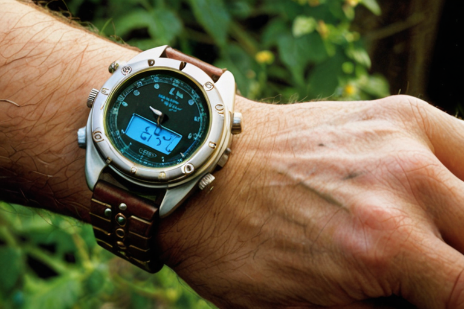
Every formation mechanic described above — the Genesis dinner, the sticker drop, the gathering, the academic workshop — is amplified by the mesh network. Devices running the Sovereign edge app passively broadcast and discover .kasset availability through physical proximity. No internet. No server. No catalog to browse. Geography is the search engine.
How It Works
Three radio layers, each serving a different range:
Pre-hardware (M1–M14): The mesh operates on BLE + WiFi-Direct only — both natively available on conforming mobile devices. This limits ambient discovery to ~100 meters, which is sufficient for events, campuses, and dense urban foot traffic. LoRa's neighborhood-scale range activates when Sovereign hardware ships at M15.
[!NOTE]
Mobile BLE throttling. Mobile platforms throttle background BLE scanning (e.g., ~15% duty cycle with service-filtered discovery). Continuous, real-time peer detection is not reliable in background mode on mobile devices. SSK's architecture accounts for this: the Echo mechanism (§4.1, 24-hour store-and-forward) is the primary discovery mode, not continuous BLE. BLE proximity triggers the trade handshake when two users are in foreground or semi-active mode; Echoes populate the browse catalog asynchronously from cached availability vectors left by prior visitors. Discovery does not depend on continuous BLE scanning — it depends on the accumulation of Echoes at high-traffic locations (storefronts, campuses, transit hubs).
§ 4. The Mesh Layer (Ambient Discovery)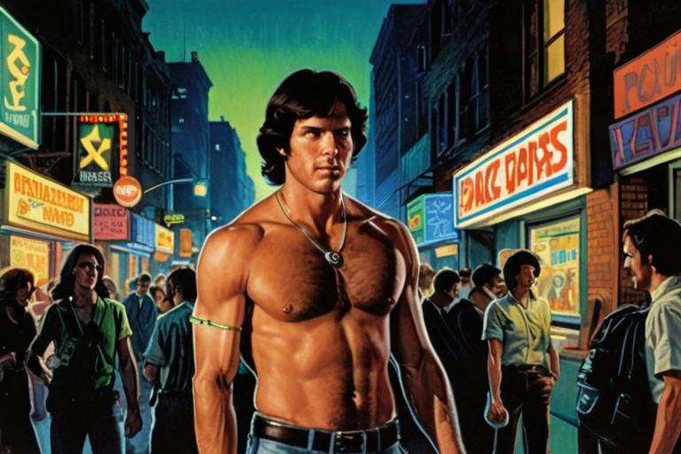
Piggybacking the City's Infrastructure
New York City has ~2,000 LinkNYC kiosks deployed across Manhattan, Brooklyn, Queens, and the Bronx — each providing free public WiFi with a range of ~100–150 meters. This is an existing mesh backbone that Sovereign can ride for free.
The mechanic: A Sovereign device within range of a LinkNYC kiosk briefly joins the open WiFi and broadcasts its availability vector via standard local network discovery (mDNS/multicast). Any other Sovereign device on the same kiosk's network receives it. The device then disconnects. Hit-and-run — a few seconds of WiFi contact is enough to exchange availability vectors.
This is not a hack. It is standard use of a public WiFi network for local service discovery. No terms of service are violated. No data leaves the local network. The kiosk is just a relay point.
What this changes:
The mesh math from Section 4 shifts dramatically. At 10,000 Sovereign users in NYC, LinkNYC extends the average encounter radius from 30m (BLE) to 150m (WiFi), increasing the coverage area by 25× (from ~2,827 m² to ~70,686 m²). Daily organic encounters scale proportionally.
§ 5. The LinkNYC Layer & The Introduction Economy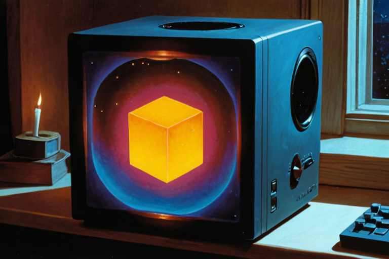
Everything described in Sections 1–5 is grassroots — dinners, stickers, storefronts, campuses, mesh. It builds slowly, deliberately, and authentically. But there is a moment in the growth curve where a single high-amplitude signal converts organic traction into viral velocity. That signal is a one-time celebrity sponsorship.
No celebrity partnership is committed at time of writing. The celebrity activation is a channel option, not a growth dependency. All five scenarios in Doc 13 §5 produce cash-flow-positive outcomes with or without celebrity participation.
Timing: M5–M6 (Not Before)
This does NOT happen at launch. The activation fires only after the following conditions are met:
If any of these are missing, the celebrity spend is wasted — you'd be driving traffic into an empty room.
The Archetype: Cardi B
§ 6. The Catalyst: Single Celebrity Activation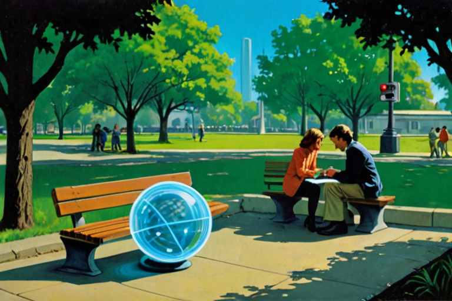
The Funnel Stack
Each formation layer feeds the next. They are not alternatives — they are sequential stages of a single acquisition funnel:
The Math: How 12 Becomes 250,000
Key inflection points:
· M4 (~1,100 users): Mesh encounter density crosses ~2 encounters/user/day. Echoes make the network feel populated even in off-peak hours.
· M5–6 (celebrity drop): 3,000 users in 48 hours. Storefronts across Brooklyn are already active — new users walk into a populated mesh immediately.
§ 7. Convergence: From 12 Users to Critical Mass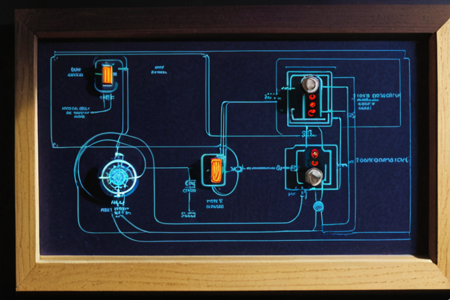
At critical mass, the network flips the traditional data extraction model. As outlined in Doc 06, a user's data exhaust—traditionally harvested for free by platforms—is captured, encrypted, and retained entirely within the local Sovereign Cocoon.
Users can authorize their Twin to bundle and anonymize specific telemetry or behavioral exhaust into macro-level .kassets. The Sovereign network then acts as an arbitrageur, trading this aggregated intelligence back to corporate cloud processors, LLM training labs, and market researchers. The corporate entities pay for high-fidelity, verified data, and the economic value flows directly back to the users who generated it. The network transitions from a cost center to an income generator for its users.
§ 8. Data Exhaust Monetization (Corporate Arbitrage)The second pillar of delegation is about curating professional and experiential progression. Rather than relying on algorithmic serendipity or a purely autonomous AI, users actively choose to "lock in" the specific people and domain experts they want to work with on a daily basis.
The user delegates discovery authority to chosen human managers or curators. These managers sift through the global mesh and the Sovereign Feed to define a highly refined, high-signal set of choices, opportunities, or introductions. The user's Twin acts as the logistical executor—maintaining these trusted connections, filtering out unauthorized noise, and presenting the user only with the curated selections from their chosen human managers. The user remains the ultimate decision-maker, selecting from a menu populated entirely by people they have explicitly chosen to trust.
§ 11. Curatorial Delegation (Locking in the Network)Because the Twin perfectly models the user's preferences, and because it ingests the Codex public record continuously, public officials can no longer rely on political amnesia. The Twin instantly cross-references any new statement from a representative against their entire historical record. Politicians must stand by their full record in any given moment, as every user's Twin acts as an indefatigable, personalized fact-checker and context-provider.
§ 12. Absolute Political AccountabilityIn Phase 3, the core mechanics of the .kasset exchange are adapted from economic trading to the democratic process.
Voting evolves from a discrete, low-information event (e.g., every two years) into a continuous process executed by agents.
How it works:
Delegation .kassets: Users issue specific cryptographic mandates (delegations) to representatives or domain experts.
Continuous Re-evaluation: The user's Twin monitors the representative's actions via the public record (Absolute Accountability).
Fluid Authority: Authority is conferred from the group onto a person to make representative decisions for the people who they delegate to. If a representative deviates from the user's values, the agent automatically withdraws the delegation and re-assigns it.
§ 13. Agentic Voting & Liquid Authority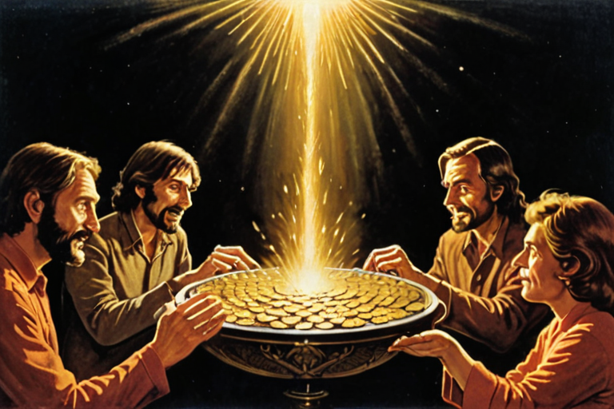
Sovereign Survival Kit does not rely on legacy corporate entities to generate revenue. We are replacing that economic model and cannot be dependent on existing players.
Revenue derives from:
Network transaction fees (progressive, physics-anchored)
Hardware sales (margin on devices that enable the network)
Service fees (storage, logistics, certification, education)
We do NOT monetize with: SaaS, data, excess compute leases, B2B licensing to enterprises, or API subscriptions.
§ Revenue Philosophy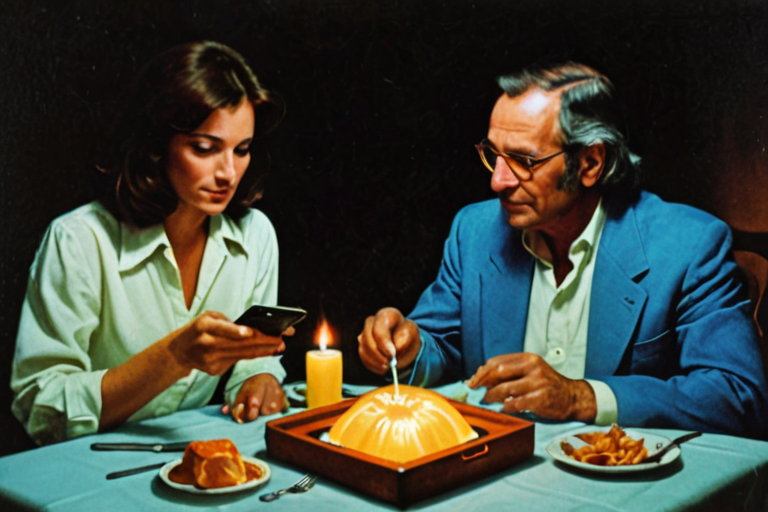
1A. Progressive Certification Fee
· What: Dynamic fee on every .kasset trade certified by SSK's certification service (notary model). Three layers: Ramsey pricing (efficiency), Rawlsian veil (equity), energy-proportional (physics constraint). Trades settle bilaterally on mesh; the fee is for certification and Codex archival.
· Variables: (1) measured asset rarity/novelty, (2) buyer's accumulated wealth profile
· Typical range: 1.0–6.0% depending on segment (see doc 11 §3 for segment breakdown)
· Weighted average: ~2.38% (M12) → ~3.25% (M36) as higher-value professional trades grow in share
· Regulatory Risk: 🟢 LOW — standard marketplace transaction fee
§ Tier 1: Core Revenue (Year 1)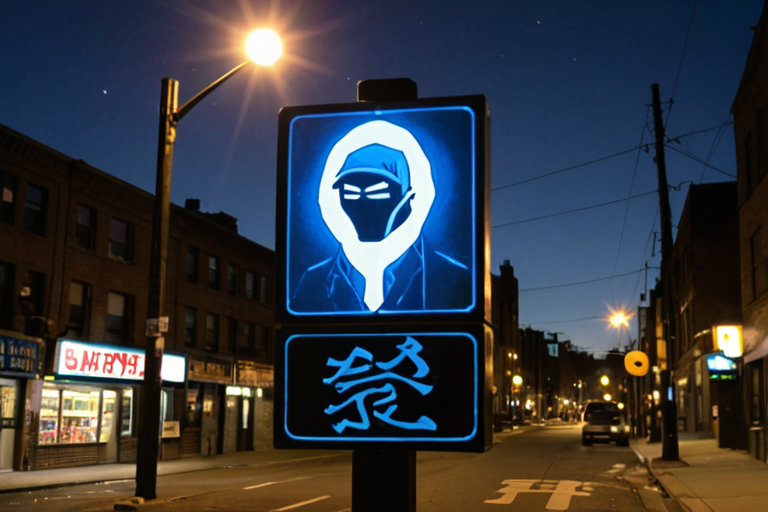
2A. Sovereign Vault (Identity Storage — Tiered)
· What: Encrypted identity storage with tiered membership. Sovereign Survival Kit never sees the contents (zero-knowledge custody).
· Tier 1 — Cold Storage: $60/year. Entry-level identity backup. Priced on safe deposit box analogy ($20-200/yr avg, TCBK/SmartAsset 2024).
· Tier 2 — Standard: $15/month. Full features: backup, freeze, marketplace tools.
· Tier 3 — Premium: $35/month + siloed education program fees ($23-70/mo, benchmarked to Adobe Creative Cloud). Premium effective: ~$80/mo.
· Conversion: 75% (Y1) → 95% (Y3). Source: FDIC 2023 — 95.8% of US households are banked. Vault IS the bank.
§ Tier 2: Premium Services (Year 2)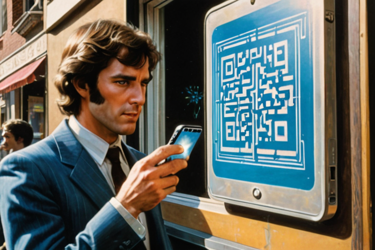
Founder directive (2026-04-15): "We do not rely on legacy corporate entities to generate revenue because we are replacing that economic model and cannot be dependent on existing players."
>
The following streams will NEVER be pursued: Biometric SDK Licensing, 7Vs Quality Grading API (white-label), Swarm Contract SDK Licensing, Constituent Intelligence Platform (Government SaaS). Enterprise API of any kind is prohibited.
>
Clarification: The Apex Oracle (Doc 26) serves individual buyers, not corporations. Every buyer is a named natural person acting through their own personal twin. There are no enterprise contracts, no corporate accounts, no B2B API, and no institutional integration. The "no B2B" constraint is absolute across all revenue tiers and all time horizons.
§ ~~Tier 3: B2B Licensing~~ — PERMANENTLY REJECTED4A. Volumetric Sphere (Ultra-Premium Hardware)
· What: White-glove venue installations of the 6-DOF gyroscopic control sphere. Distinct from the consumer Sphere/Rig ($2,499-$4,999 in doc 11) — this is a purpose-built, professionally installed system.
· Pricing: $50,000-$150,000 per unit
· Revenue: 50 units/year × $100K avg = $5M
· Margin: 65%+
· Regulatory Risk: 🟢 LOW — capital equipment sales
§ Tier 4: Sphere & Hardware Premium (Year 3+)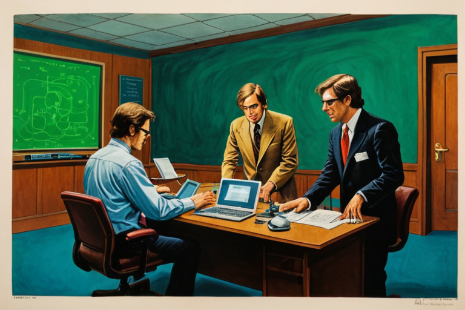
5A. Expertise Certification Endorsements
· What: As the Provenance Engine builds verified expertise scores, professional organizations and industry guilds may pay to integrate or endorse Sovereign Survival Kit expertise ratings as an alternative to traditional credentialing.
· Pricing: Partnership/endorsement fees $50K-$200K/year
· Revenue: Long-term brand value play
· Regulatory Risk: 🟢 LOW — standard endorsement/partnership fees
§ Tier 5: Network & Ecosystem Revenue (Year 2+)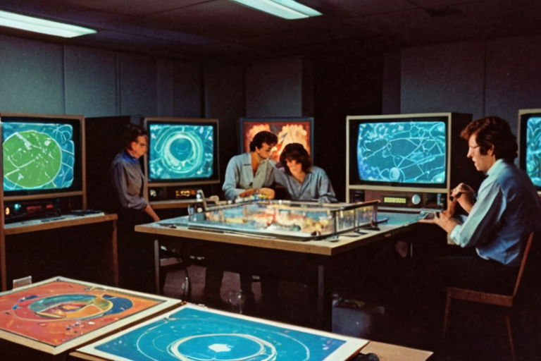
Note: Specific dollar amounts are NOT stated here to avoid inconsistency with the financial model. All revenue projections are calculated in doc 11 (Financial Model) and doc 12 (Scenario Analysis) using cited assumptions and shown work. This document defines WHAT we charge. Doc 11 defines HOW MUCH.
§ Revenue Roadmap Summary (Approved Streams Only)The Sovereign Survival Kit ships as two components:
Component A: Desktop Application
A native desktop application distributed directly from the Company's website. Installable from a single package.
Per-platform packaging:
The desktop application contains:
Vault — Two-compartment encrypted storage (Doc 28). vault_key = Argon2id(passphrase) ⊕ HSM_key. HSM, KDF, and encrypted storage coexist in the same native process — no boundary crossing.
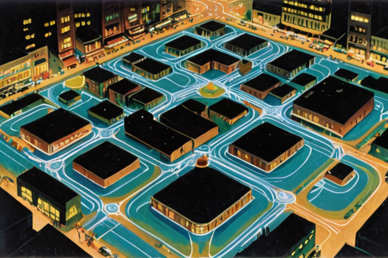
The reference design (Doc 03, Doc 28) requires three platform capabilities:
Mobile Browser — Available APIs
Mobile Browser — Blocked APIs
§ §2. Capability Satisfaction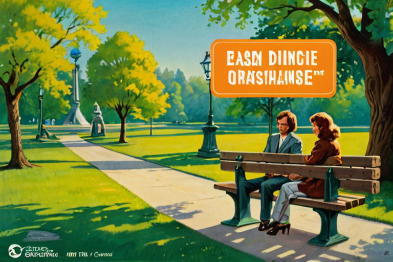
Proximity discovery operates across four tiers. No company infrastructure participates in any tier. Zero middleman.
Tier 1: BLE (Desktop-to-Desktop — Ambient)
When two desktops running SSK are in BLE range (~30m), they discover each other and exchange availability vectors automatically. No user action required.
Scenarios: Coffee shops, coworking spaces, academic workshops, Genesis dinners — any setting where laptops are present. The desktops advertise and scan. The phone is not involved in Tier 1.
Tier 2a: QR Exchange (Phone — Intentional, Zero Network)
Two people with phones. No WiFi. No BLE. No network of any kind. The camera is the radio:
§ §3. Four-Tier Discovery ModelPhysical distribution stickers use QR codes, not NFC tags. QR codes are 10× cheaper, universally compatible with any phone camera, and scannable from any mobile browser via getUserMedia() + jsQR.
Two Modes
Claim Sticker (single .kasset): QR encodes a one-time claim token + .kasset metadata. User scans → claims the asset. First scan wins. Token burned on claim. Works offline (claim queued, settled when desktop is reachable).
Discovery Sticker (catalog): QR encodes an availability vector. User scans → sees what the artist has for sale. Browsing is fully offline. Purchase is queued until connectivity.
Economics
Anti-Cloning
§ §4. Sticker Distribution — QR Codes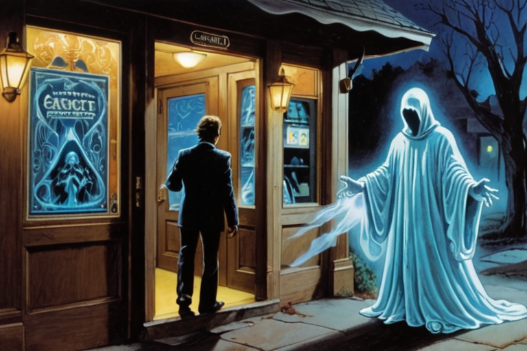
The vault locks when the user is not present. "Present" is a human state that technology can only approximate.
Enforcement point: The desktop application. The phone contributes signals but does not enforce the lock.
Candidate signals:
Design constraints:
The desktop is the enforcement point
The vault locks when presence cannot be confirmed
§ §5. Presence Detection — Open Design Problem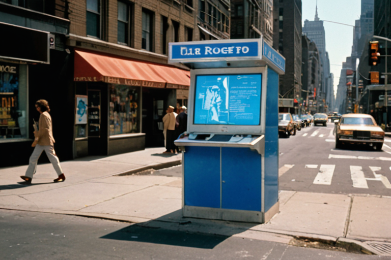
The vault key derivation requires an HSM abstraction layer:
Linux single-factor note: Without a hardware HSM, Ubuntu installations rely on passphrase-only KDF. This is weaker than the two-factor model on macOS/Windows. Users who require two-factor vault security should use macOS or Windows, or add a USB HSM (YubiKey, Nitrokey) as a future hardware option.
§ §7. Platform HSM AbstractionOpen Source: The Vault (Layer 0)
The vault layer is open source. This is the transparency commitment. The user must be able to verify that the safe is real — that the encryption has no backdoor, the lock works, the burn credential destroys data, and the airgap check is honest.
The vault contains no novel algorithms. It composes well-known cryptographic primitives (AES-256-GCM, Argon2id, P-256 ECDSA, ML-DSA-65) into the two-compartment architecture. The novelty is in the architecture (what's stored where, why the compartments exist, how the lock triggers) — which is protected by defensive patent claims 11 and 13 (Doc 21). The implementation uses standard libraries that any cryptographer can audit.
What's open source:
License: Apache 2.0. Separately buildable and auditable.
Proprietary: Everything Above the Vault
§ §8. Source Code Licensing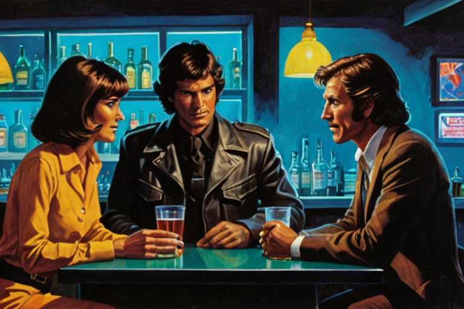
The desktop application runs as a native process on each platform. No Docker, Podman, or virtualization layer is used. This is a deliberate architectural decision.
Rationale
The container's only advantage — a clean, flag-level network airgap — does not justify splitting the vault's security boundary across a process barrier. The airgap during minting is enforced by the minting code itself: it checks all network interfaces and refuses to proceed if any are reachable. This check is part of the open-source vault layer and is verified by the reproducible build.
Cross-Platform Strategy
The application is not made cross-platform by a container. It is made cross-platform by the language stack:
The platform-specific surface is ~550 lines per platform. Everything else is shared.
§ §9. No Containerization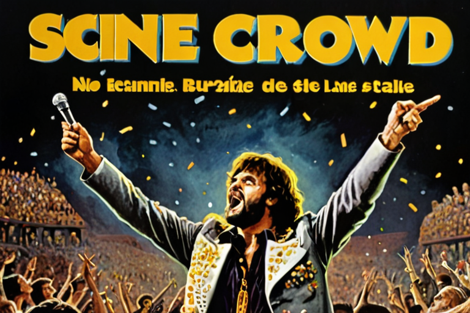
A central problem in sovereign data architecture is the transfer of cognitive methodology between autonomous agents without transferring cognitive identity. A seller possesses expertise — a process for solving a class of problems. A buyer wishes to acquire that process. The transfer must preserve the what and how of the methodology while destroying the who — the cognitive fingerprint of the seller.
Linguistic translation fails this requirement. Authorship attribution survives translation across natural languages; stylometric features persist even under aggressive paraphrasing (Koppel, Schler, & Argamon, 2009). The translation must therefore be structural, operating on the topology and dynamics of the process itself rather than on its linguistic surface.
Thesis. A methodology is a geodesic on a manifold. The seller's identity is the coordinate system. Minting strips the coordinates. Folding installs new coordinates. Privacy is geometry.
More precisely: any cognitive methodology can be encoded as a sequence of five process-algebraic operators (Milner, 1989) annotated with continuous temporal dynamics (Lee, 1998) in ℝ^∞. This encoding lives on an infinite-dimensional manifold whose curvature emerges from the collective behavior of all agents. The seller's idiolect defines a fiber over each point of the base trajectory; minting projects the trajectory onto the base manifold, discarding the fiber. The buyer's idiolect selects a new fiber, reconstructing the methodology in the buyer's personal cognitive space via energy minimization (Anfinsen, 1973). The projection is many-to-one: the seller's identity cannot be recovered. The methodology content is invariant: the buyer receives what was encoded. Privacy and fidelity are not competing objectives — they are dual consequences of the same geometric structure.
The encoding formalizes a fundamental epistemological distinction: the factual structure of a methodology (which operations, in what order, with what branching logic) is observer-independent — it lives on the base manifold. The opinion texture (the practitioner's personal rhythm, emphasis, confidence, and aesthetic weighting) is observer-dependent — it lives in the fiber. Minting extracts the fact and strips the opinion. Folding adds new opinion to the preserved fact. Lossiness and privacy are the same phenomenon measured from different sides: lossiness is the opinion that was stripped; privacy is the identity that was destroyed with it.
This paper derives the Edgcumbe calculus that formalizes this construction. The calculus generates cognitive encoding and economic dynamics as specializations of a single pair of equations: the geodesic equation (agent dynamics) and the mean-field emergence equation (manifold dynamics). §2 establishes the five independent first principles. §3 derives the calculus. §4 demonstrates domain specializations. §5 registers assumptions and limitations. Companion documents provide the physics onboarding (Internal: 37a) and technical specification with IP claims (Internal: 37b).
§ §1. IntroductionThe Edgcumbe encoding is derived from the intersection of five independent bodies of established theory. Each contributes one structural constraint. Their combination is novel; individually, each is well-established.
§2.1 Complexity and Computational Equivalence
Wolfram (2002) demonstrated that simple rules iterated over simple elements produce arbitrary complexity. Rule 110 — a one-dimensional cellular automaton with 2 states and nearest-neighbor rules — is Turing-complete (Cook, 2004). The complexity resides not in the elements or the rules but in the iteration.
Constraint derived: The encoding alphabet can be small. Expressiveness arises from the combinatorics of sequences, not from the richness of individual symbols. A base of 5 symbols is sufficient for universal process description if the iteration depth is unbounded.
§2.2 Radix Economy
The most efficient integer radix — minimizing the product of base × digits required to represent a given range — is the integer nearest to Euler's number e ≈ 2.718 (Knuth, 1997, Vol. 2). That integer is 3. Base-3 is mathematically optimal for compact representation.
§ §2. First Principles§3.1 The Unified Equation
We define a complex adaptive system in the language of differential geometry.
Definition 1 (State manifold). Let M be an infinite-dimensional differentiable manifold. Points on M represent states of the system. Curves on M represent trajectories (evolution over time).
Definition 2 (Connection). A connection Γ on M specifies how tangent vectors at one point relate to tangent vectors at nearby points. Γ encodes the manifold's curvature — how the state space bends.
Definition 3 (Geodesic equation). An agent's trajectory x(t) on M satisfies:
This is the equation of geodesic flow: the agent follows the straightest possible path through curved space. The acceleration (d²x/dt²) is determined by the curvature (Γ) and the current velocity (dx/dt).
§ §3. The Edgcumbe CalculusThe unified equation pair — geodesic (1) and emergence (2) — generates mature scientific domains as specializations. Each is obtained by specifying the manifold, field, connection, and symmetry group. The physics specialization (quantum mechanics) is developed in the companion document (Internal: 37a); this section focuses on economics, where the structural correspondences are most directly testable.
§4.1 Economics
Key correspondences:
Superposition → Option value. Before exercise, a financial option encodes all possible payoffs weighted by probability (Black & Scholes, 1973). Exercise collapses the option to realized payoff. Before trade, a .kasset encodes all possible understandings. Folding collapses to one. The mathematical structure is identical — path integration over future states.
Gauge invariance → Numéraire invariance. The choice of numéraire (which good denominates prices) does not affect economic outcomes, just as the choice of idiolect does not affect methodology content. Both are gauge invariances — the content is projection-invariant, the representation is observer-dependent.
Information loss → Akerlof inverted. Akerlof (1970) showed that information asymmetry in markets destroys quality (only "lemons" are sold). In the Edgcumbe system, information loss is a feature: the encoding is designed to lose the seller's identity. The mechanism is strategy-proof — the seller cannot encode identity even intentionally, because minting is a many-to-one projection.
§ §4. Domain Specializations§5.1 Register of Assumptions
§5.2 Relationship to Prior Frameworks
The Edgcumbe calculus synthesizes but does not replace its source theories. Wolfram (2002) provides the principle that small alphabets suffice. Lee (1998, 2009) provides the dynamic variables. Milner (1989) provides the structural operators. Anfinsen (1973) provides the folding model. Each is used within its established domain of validity; the novelty is in the combination.
The calculus does NOT claim to be a theory of consciousness, a replacement for quantum mechanics, or a general economic model. It is a framework for encoding cognitive methodology as a gauge-invariant sequence on an emergent manifold, with privacy as a geometric property.
§5.3 Limitations
No empirical validation. This is a theoretical paper that defines the formal structure and experimental predictions of the Edgcumbe encoding. Empirical data follows the experiment definition; this paper IS the experiment definition. The predictions in §5.5 are stated with sufficient precision to be tested against a deployed implementation. The relationship between theory and experiment is sequential, not concurrent — the theory must be internally consistent before measurement can confirm or refute it.
§ §5. Discussion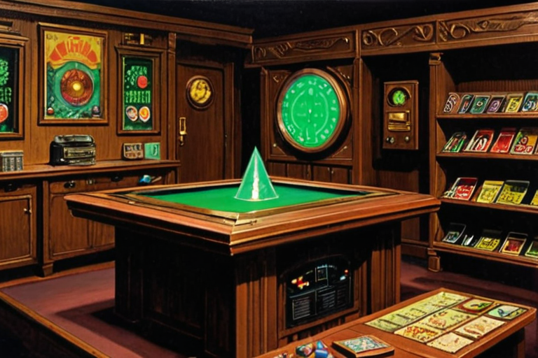
The following companion documents contain material extracted from earlier drafts of this paper to separate the theoretical framework from implementation details and audience-specific onboarding:
· Internal: 37a — Physics Onboarding. Maps the Edgcumbe framework onto quantum mechanical structures (hydrogen atom reference, QM specialization, divergences, open research directions). For physicist onboarding.
· Internal: 37b — Technical Specification & IP Claims. System architecture, pipeline specifications, complementary pairing validator, domain convergence monitor, and defensible IP claim register. For engineering and patent counsel.
§ §6. Companion DocumentsThe original design pegged .kasset values to gold via an algorithmic oracle. This was abandoned because:
Gold is mutable. Central banks hold 35,000+ tonnes. Government gold sales/purchases move the price. A sovereign could manipulate .kasset values by manipulating gold markets.
Gold is geographically asymmetric. South Africa, China, Russia, and Australia dominate production. σ's energy base is universal.
Gold has no intrinsic utility in the digital context. Energy is the substrate of all computation. Pricing intelligence in energy units is philosophically coherent.
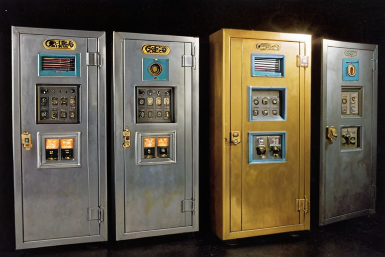
· Derived from: SI joule, defined by the Planck constant (exact since the 2019 BIPM redefinition of SI base units)
· Changes when: NIST redefines the joule (happens only when measurement precision improves — the unit itself is invariant)
· Cannot be: printed, inflated, sanctioned, debased
σ is a reference number — a unit-of-account label applied to the user's existing fiat balance. It is NOT:
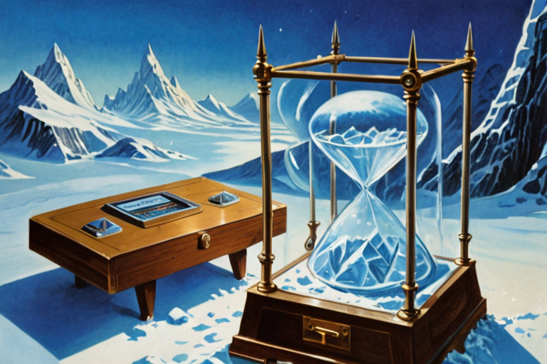
REC = Regional Energy Cost
SSK publishes and open-sources a deterministic conversion function that converts σ to local currency using publicly available total delivered energy cost data — the all-in price a consumer pays per kWh, including production, transmission, distribution, storage, and applicable taxes/fees. This is the retail electricity price, not the levelized cost of energy (LCOE) or production cost alone.
The company publishes the formula once. It does NOT operate a centralized oracle, set prices, or update rates on behalf of users.
Why Total Delivered Cost, Not Production Cost
There is no blockchain, no sequencer, and no smart contract. Trades settle bilaterally. Both devices must have their vaults open (foreground exclusivity — Doc 28 §0.7) to sign:
Steps 7-12 are intentionally asynchronous. The trade itself (steps 1-6) completes without SSK involvement. Fiat settlement (step 7) occurs outside SSK using whatever payment method the counterparties choose — identical to how Craigslist, Facebook Marketplace, and OfferUp transactions settle. The seller's on-device payment confirmation (step 8) binds the fiat acknowledgment to the cryptographic provenance chain without SSK touching, holding, or transmitting money. Certification happens later — when network connectivity is available, or when the user is physically near a Vault mesh node.
SSK's certification service is a notary — it certifies trades in exchange for a fee. It does not set prices, order transactions, manage a ledger, or control the marketplace. The traded .kasset content is Edgcumbe-encoded (Doc 28 §0.5) — a standardized, lossy format that carries methodology without the seller's cognitive fingerprint. The certification service certifies the provenance chain, not the content. The Codex (Stiftung-operated, non-profit) provides permanent archival.
Certification constraints (from Layer 0/1):
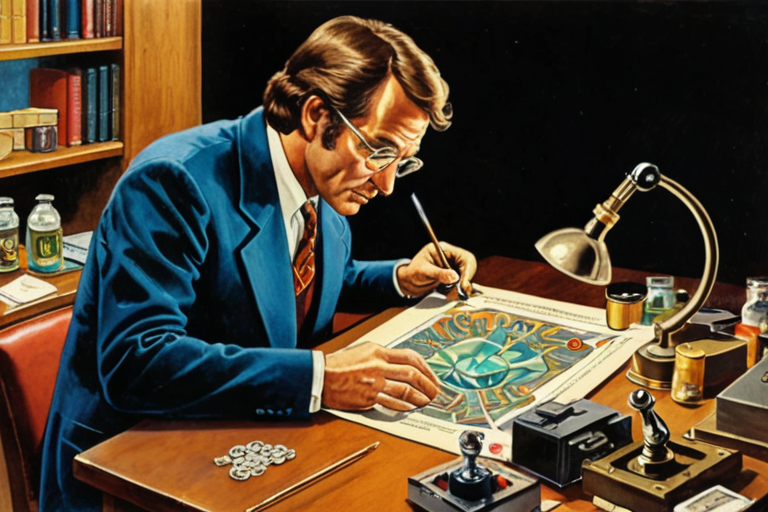
· Primary display: Spark ⚡ (always)
· Secondary: Local currency as reference (toggle-able), calculated from user's selected data source
· Source line: Explicit data source + timestamp (not "↑ 0.3% today" — SSK does not track rate movements)
· Staleness warning: Soft warning if cached rate exceeds user's staleness preference (default: 7 days)
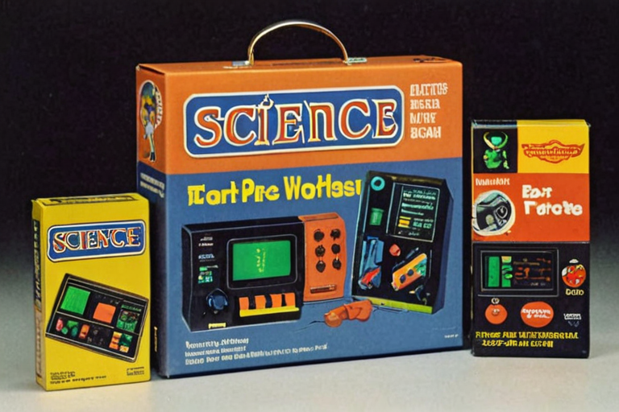
The Trend
Global energy costs are shaped by two vectors moving in opposite directions:
Production cost (LCOE) is in secular decline:
Net-positive milestones:
Thesis summary: σ is a metrological reference number defined by physics (1 kWh ≡ 3.6 MJ), not by policy. Its fiat-equivalent value is determined by publicly observable delivered energy costs and fluctuates with those costs — it can decrease as energy infrastructure becomes more efficient. Each device computes the conversion locally using a published, deterministic, open-source formula on user-selected data sources. No central oracle exists. Unlike a production-cost peg, the total-delivered-cost basis retains a durable non-zero fiat anchor through infrastructure costs, making σ a practical unit of account today. σ is not designed or marketed as an investment, a store of value, or an appreciating asset. Users are responsible for their own assessment of σ's utility and any applicable tax obligations.
Service UUID
Characteristic Format
Every sensor transmits a standardized JSON payload over BLE GATT notify:
Design Constraints
Note: This architecture represents the Version 2.0 design, intended for release concurrently with the Lifestyle Sensors line.
As the sensor line streams continuous biometric and environmental data, the Sovereign Digital Cocoon evolves into a Universal Fact Engine. Every breath, heartbeat, and movement becomes a high-signal fact captured locally.
4.1 The Merkle Epoch (Local Minting)
Minting every individual data point via AES-256-GCM and ML-DSA-65 would destroy battery and storage. Instead, Version 2.0 utilizes a Layer 3 State Channel (The Merkle Epoch):
The twin's Situational Retrieval module (documented in 03_Twin_Architecture.md, Section 2) uses sensor data as one of its context signals. For example:
· SovPulse reports HRV = 22ms → twin tags current state as "high stress"
· SovAir reports CO2 = 1200ppm → twin injects a ventilation nudge before the next response
· SovBreath reports acetone = 3.1ppm → twin notes ketosis and factors into Diet domain planning
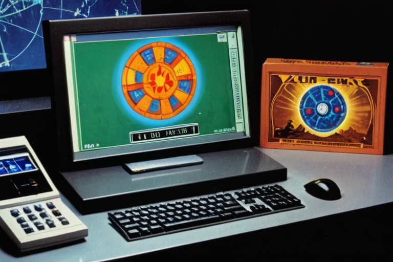
Hardware Revenue
Strategic Value (Not Revenue)
The primary value of the sensor line is NOT hardware margin. It is:
Engagement flywheel — As biometric history accumulates, the twin becomes irreplaceable. 6 months of continuous HRV, sleep, and metabolic data creates a personal health baseline no competitor can replicate.
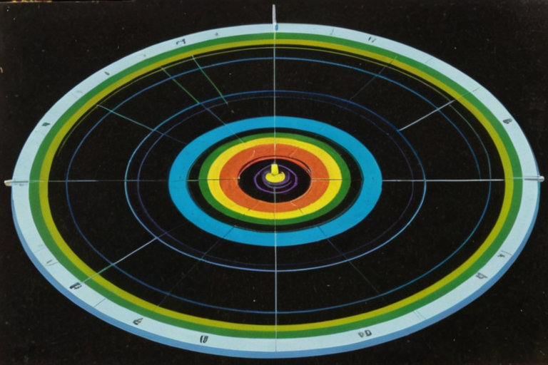
Note: Biometric sensor devices may trigger regulatory classification depending on jurisdiction. This section captures awareness; detailed analysis is deferred to Phase 2+.
The sensor product line complements, not replaces, the existing hardware roadmap:
The network begins with a dinner — and repeats no more than four times per year.
A small portion of the seed round funds an intimate, curated series of events in New York City — each seating 8 to 16 people drawn from local educational institutions, alumni networks, and creative communities. Each event targets a different community. The venue is site-specific (a private dining room, a gallery, a club library). The meal is catered. The invitation carries one instruction:
"Bring a piece of digital media you made. You will mint it and trade it with the others at the table."
The quarterly cadence is deliberate — scarcity creates gravity. These are not recurring meetups. Each Genesis dinner is a curated, invitation-only event that seeds a new community into the network. Four per year means four new communities, four new .kasset domains, four new local word-of-mouth waves.
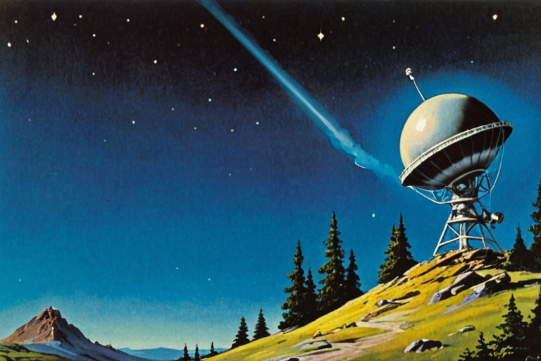
The Genesis Event proves the mechanic works: people create, price, and trade digital media face-to-face. The next phase scales that mechanic through two channels that reinforce each other — one ambient, one event-driven.
Vector A: The Sticker Drop (QR Street Distribution)
Local musicians and visual artists distribute their work by leaving pre-printed QR stickers in the streets. QR stickers are $0.05–$0.15/unit ambient awareness placements — they supplement mesh discovery and word-of-mouth, not replace them. See Doc 29 §4 for the full QR sticker specification.
The sticker is a designed object. Each sticker is custom-printed with the artist's name, a thumbnail of the work (album art, a cropped image of the visual piece), Sovereign branding, and a QR code. The .kasset is pre-minted and the one-time claim token is encoded in the QR before the artist ever touches it. The artist's only job is to decide where to place them.
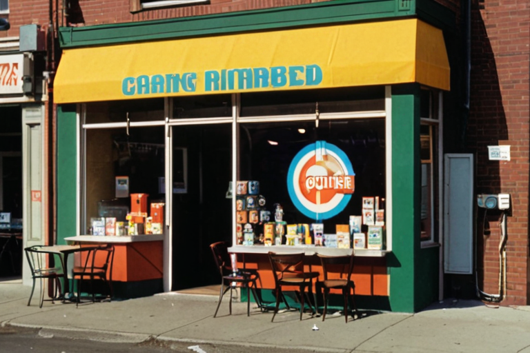
While the cultural track seeds the network through music and visual art, a parallel track runs simultaneously through academic institutions — starting with the Joseph Wharton Scholars (JWS) at the University of Pennsylvania.
The mechanic is the same. The medium is different. Instead of tracks and prints, students mint class papers, research projects, case analyses, and thesis work as .kassets and trade them with other students.
Why JWS
What Gets Minted
Every formation mechanic described above — the Genesis dinner, the sticker drop, the gathering, the academic workshop — is amplified by the mesh network. Devices running the Sovereign edge app passively broadcast and discover .kasset availability through physical proximity. No internet. No server. No catalog to browse. Geography is the search engine.
How It Works
Three radio layers, each serving a different range:
Pre-hardware (M1–M14): The mesh operates on BLE + WiFi-Direct only — both natively available on conforming mobile devices. This limits ambient discovery to ~100 meters, which is sufficient for events, campuses, and dense urban foot traffic. LoRa's neighborhood-scale range activates when Sovereign hardware ships at M15.
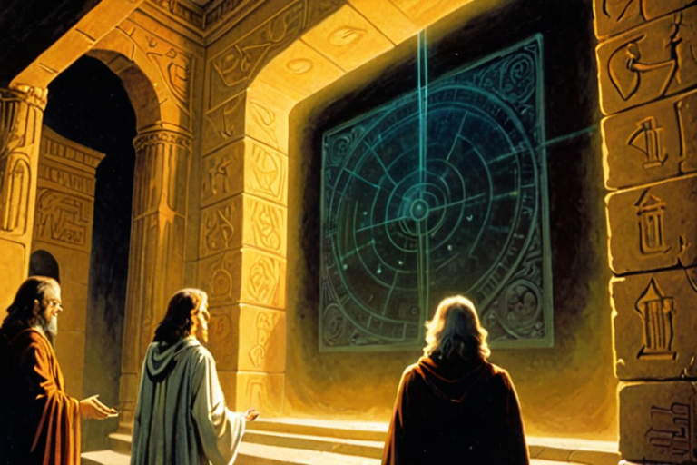
Piggybacking the City's Infrastructure
New York City has ~2,000 LinkNYC kiosks deployed across Manhattan, Brooklyn, Queens, and the Bronx — each providing free public WiFi with a range of ~100–150 meters. This is an existing mesh backbone that Sovereign can ride for free.
The mechanic: A Sovereign device within range of a LinkNYC kiosk briefly joins the open WiFi and broadcasts its availability vector via standard local network discovery (mDNS/multicast). Any other Sovereign device on the same kiosk's network receives it. The device then disconnects. Hit-and-run — a few seconds of WiFi contact is enough to exchange availability vectors.
This is not a hack. It is standard use of a public WiFi network for local service discovery. No terms of service are violated. No data leaves the local network. The kiosk is just a relay point.
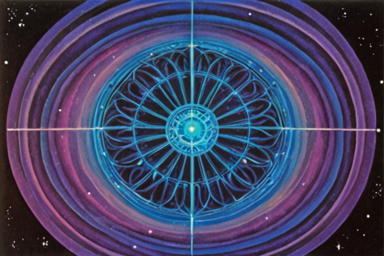
Everything described in Sections 1–5 is grassroots — dinners, stickers, storefronts, campuses, mesh. It builds slowly, deliberately, and authentically. But there is a moment in the growth curve where a single high-amplitude signal converts organic traction into viral velocity. That signal is a one-time celebrity sponsorship.
No celebrity partnership is committed at time of writing. The celebrity activation is a channel option, not a growth dependency. All five scenarios in Doc 13 §5 produce cash-flow-positive outcomes with or without celebrity participation.
Timing: M5–M6 (Not Before)
This does NOT happen at launch. The activation fires only after the following conditions are met:
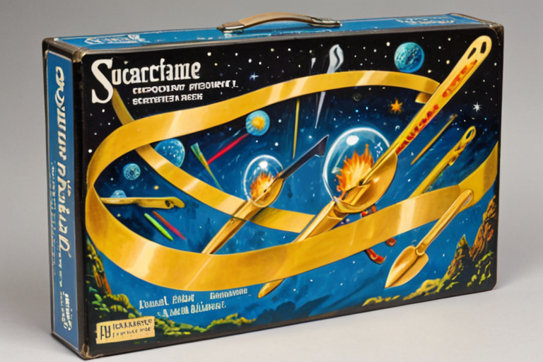
The Funnel Stack
Each formation layer feeds the next. They are not alternatives — they are sequential stages of a single acquisition funnel:
The Math: How 12 Becomes 250,000
Key inflection points:
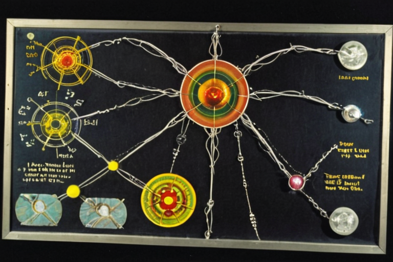
At critical mass, the network flips the traditional data extraction model. As outlined in Doc 06, a user's data exhaust—traditionally harvested for free by platforms—is captured, encrypted, and retained entirely within the local Sovereign Cocoon.
Users can authorize their Twin to bundle and anonymize specific telemetry or behavioral exhaust into macro-level .kassets. The Sovereign network then acts as an arbitrageur, trading this aggregated intelligence back to corporate cloud processors, LLM training labs, and market researchers. The corporate entities pay for high-fidelity, verified data, and the economic value flows directly back to the users who generated it. The network transitions from a cost center to an income generator for its users.
With the mesh active and the user base engaged, SovereignOS replaces legacy "doom-scrolling" platforms (Facebook, Instagram, X) with a Twin-curated, asynchronous information architecture.
Feed Inputs:
Authorized Broadcasts: Personalized messages sent by authorized individuals to N number of recipients (the Sovereign equivalent of a mailing list or group broadcast).
The Public Record: Statements, votes, and actions by public officials and government representatives, ingested continuously via the Codex subscription.
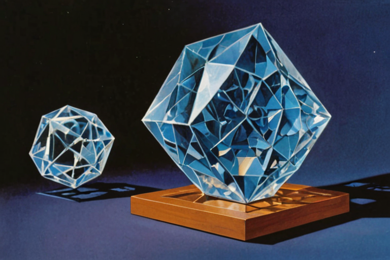
The second pillar of delegation is about curating professional and experiential progression. Rather than relying on algorithmic serendipity or a purely autonomous AI, users actively choose to "lock in" the specific people and domain experts they want to work with on a daily basis.
The user delegates discovery authority to chosen human managers or curators. These managers sift through the global mesh and the Sovereign Feed to define a highly refined, high-signal set of choices, opportunities, or introductions. The user's Twin acts as the logistical executor—maintaining these trusted connections, filtering out unauthorized noise, and presenting the user only with the curated selections from their chosen human managers. The user remains the ultimate decision-maker, selecting from a menu populated entirely by people they have explicitly chosen to trust.
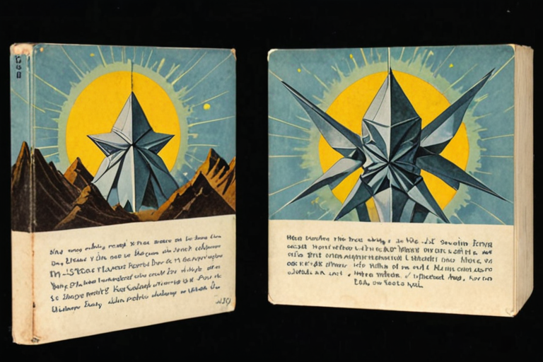
Because the Twin perfectly models the user's preferences, and because it ingests the Codex public record continuously, public officials can no longer rely on political amnesia. The Twin instantly cross-references any new statement from a representative against their entire historical record. Politicians must stand by their full record in any given moment, as every user's Twin acts as an indefatigable, personalized fact-checker and context-provider.
In Phase 3, the core mechanics of the .kasset exchange are adapted from economic trading to the democratic process.
Voting evolves from a discrete, low-information event (e.g., every two years) into a continuous process executed by agents.
How it works:
Delegation .kassets: Users issue specific cryptographic mandates (delegations) to representatives or domain experts.
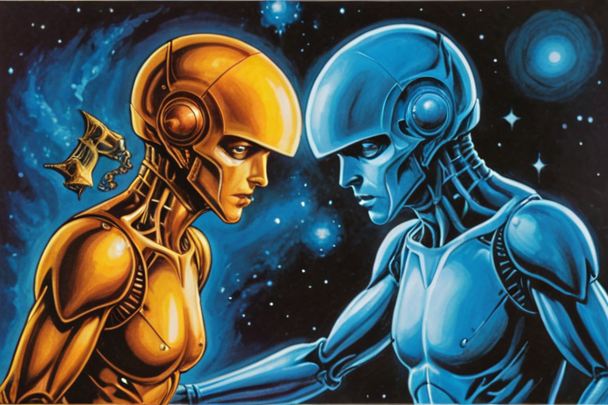
Sovereign Survival Kit does not rely on legacy corporate entities to generate revenue. We are replacing that economic model and cannot be dependent on existing players.
Revenue derives from:
Network transaction fees (progressive, physics-anchored)
Hardware sales (margin on devices that enable the network)
1A. Progressive Certification Fee
· What: Dynamic fee on every .kasset trade certified by SSK's certification service (notary model). Three layers: Ramsey pricing (efficiency), Rawlsian veil (equity), energy-proportional (physics constraint). Trades settle bilaterally on mesh; the fee is for certification and Codex archival.
· Variables: (1) measured asset rarity/novelty, (2) buyer's accumulated wealth profile
· Typical range: 1.0–6.0% depending on segment (see doc 11 §3 for segment breakdown)
2A. Sovereign Vault (Identity Storage — Tiered)
· What: Encrypted identity storage with tiered membership. Sovereign Survival Kit never sees the contents (zero-knowledge custody).
· Tier 1 — Cold Storage: $60/year. Entry-level identity backup. Priced on safe deposit box analogy ($20-200/yr avg, TCBK/SmartAsset 2024).
· Tier 2 — Standard: $15/month. Full features: backup, freeze, marketplace tools.
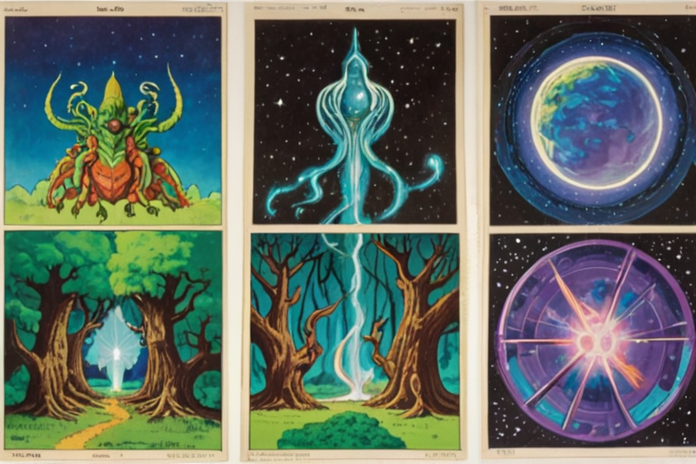
4A. Volumetric Sphere (Ultra-Premium Hardware)
· What: White-glove venue installations of the 6-DOF gyroscopic control sphere. Distinct from the consumer Sphere/Rig ($2,499-$4,999 in doc 11) — this is a purpose-built, professionally installed system.
· Pricing: $50,000-$150,000 per unit
· Revenue: 50 units/year × $100K avg = $5M
5A. Expertise Certification Endorsements
· What: As the Provenance Engine builds verified expertise scores, professional organizations and industry guilds may pay to integrate or endorse Sovereign Survival Kit expertise ratings as an alternative to traditional credentialing.
· Pricing: Partnership/endorsement fees $50K-$200K/year
· Revenue: Long-term brand value play